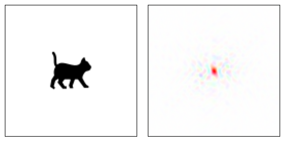
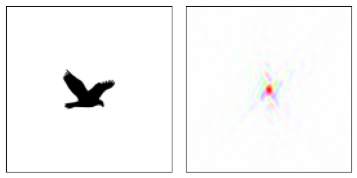
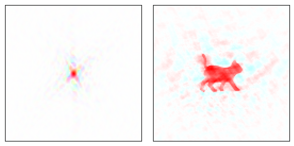
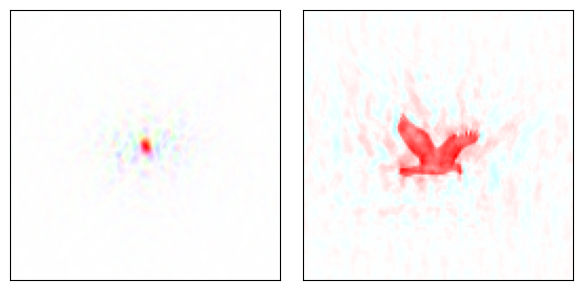

(Top)
Part of a series on Phase retrieval
See also
- R. P. Millane, Phase Retrieval in Crystallography and Optics, J. Opt. Soc. Am. A 7, 394 (1990).
- J. R. Fienup, Phase Retrieval Algorithms: A Comparison, Appl. Opt., AO 21, 2758 (1982).
Single object phase retrieval
The phase problem
Many detectors are limited to measuring only the intensities of a wavefront, discarding the phase part. Unfortunately the phases contain valuable structural information, which is a problem for all coherent diffraction imaging (CDI) methods.
a 
b A cat and a bird, and their Fourier transforms.
Brightness = amplitude, color = phase. Idea from Cowtan (1).
A propagated wave (in the far field) is the Fourier transform of its source. Backpropagating a diffraction pattern is as simple as taking the inverse Fourier transform, but without the phases this is meaningless.
a 
b Inverse Fourier transforms when the phase part is changed.
a Amplitude from bird, phase from cat. b Amplitude from cat, phase from bird. The phases encode most of the structural information (1).
The phase problem is solved through a priori knowledge or assumptions about the sample (2). This knowledge acts as constraints for the inversion, forcing the solution to be unique.
Iterative phase retrieval
The first successful approach for phase retrieval came from Gerchberg and Saxton in 1972 (3), who used an iterative method to solve the phase problem for electron microscopy. Their method of optimizing in two different regimes each with its own restraints is still highly relevant to more modern phase retrieval schemes.
Gerchberg-Saxton algorithm and Fienup’s improvements
Maximum Likelihood Estimation
Fienup shows that the Gerchberg-Saxton algorithm is in essence solving an optimization problem for the error metric. However, this “loss function” is not strictly required to be the sum of squares. Another approach, based on probabilities, is known as Maximum Likelihood Estimation.